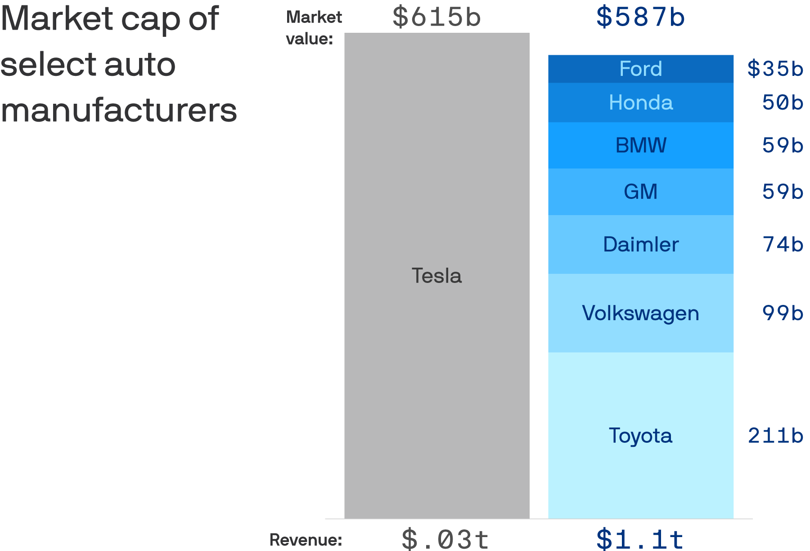
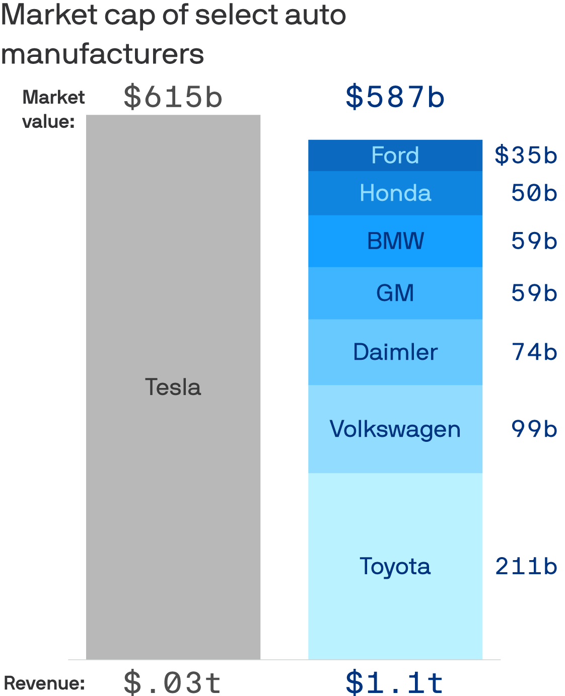
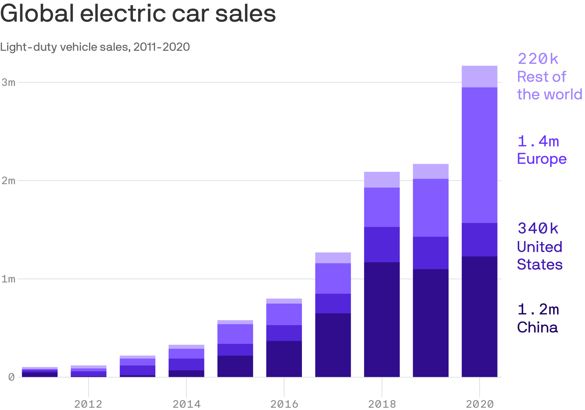
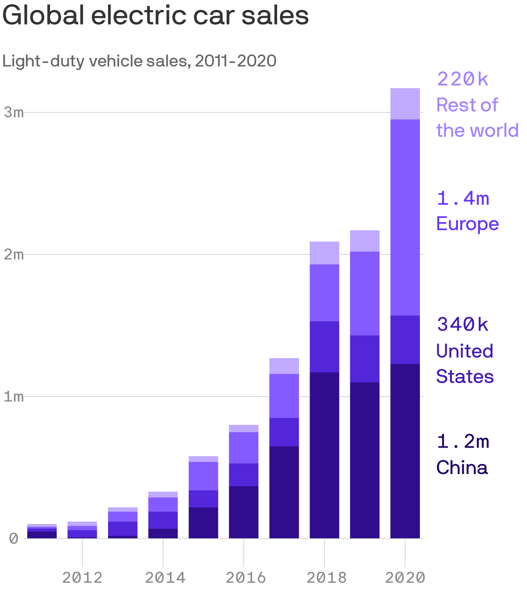
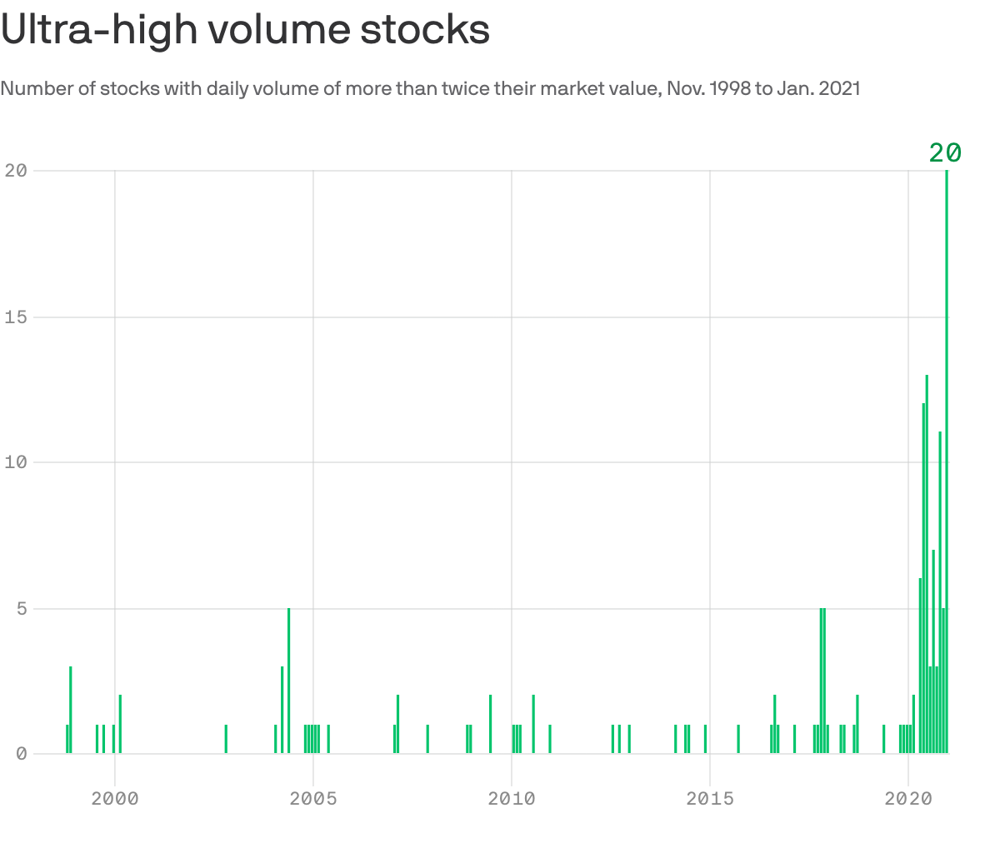
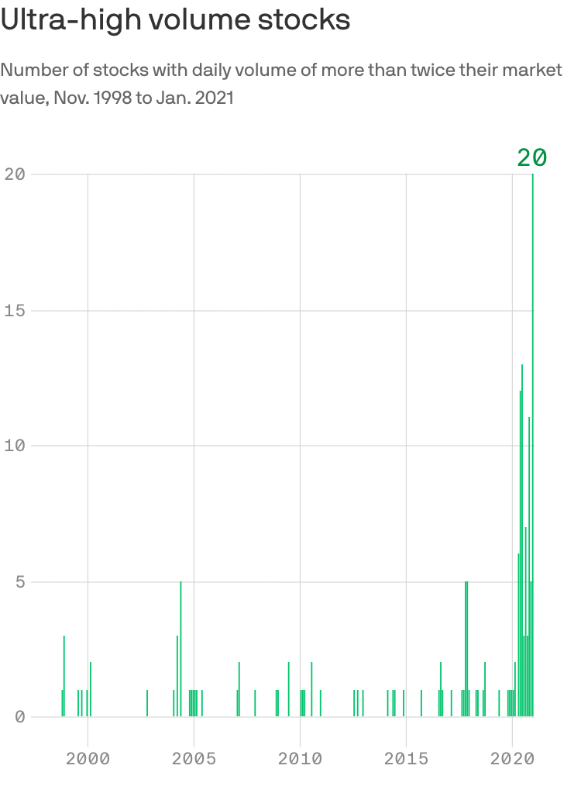

Tesla mania vs.economic reality
Market cap of select auto manufacturers $615b $587b Market value: Ford $35b 50b Honda BMW 59b GM 59b Daimler 74b Tesla Volkswagen 99b 211b Toyota $.03t $1.1t Revenue:
Tesla is now more valuable than the combination of the world’s top seven traditional auto makers, despite only delivering half a million cars this year.
Why it matters: Anyone searching for evidence that the stock market and the real economy are not the same thing, should look no further.
Tesla’s true believers are not paying for actual performance, but they are betting on Elon Musk as a visionary and the potential upside in the still nascent electric vehicle market.
Reality check: The overall equity market’s meteoric rise in the face of a U.S. economy that will end 2020 3% smaller than it started the year, is just the latest example of the economic reality decoupling from stocks.
Driving the news: While Tesla mania was once limited just to those who back Musk, after today anyone invested in an S index fund is essentially being forced along for the ride.
What they’re saying: 'Tesla shares are in our view and by virtually every conventional metric not only overvalued, but dramatically so,' wrote Ryan Brinkman, a JPMorgan analyst, in a research note.
Yes, but: Tesla makes cars, but they could also be categorized alongside pure tech or electric vehicle companies.It is early in the 'golden age of EV playing out globally,' says Dan Ives, an analyst at Wedbush Securities.
Posted On: 2020-12-22T00:00:00
Posted By: Aja Whitaker-Moore






Content Date: 2020-12-22
Download Date: 2021-05-15
Document ID: L0C04CHNC